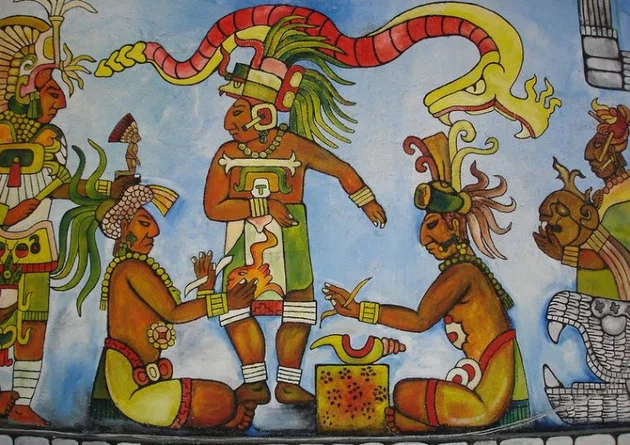

<!DOCTYPE html>
<html lang="en">
<head>
    <meta charset="UTF-8">
    <meta name="viewport" content="width=device-width, initial-scale=1.0">
    <meta name="author" content="Gustavo Sales">
    <meta name="keywords" content="página, Html, programação">
    <meta name="description" content="Página de desenvolvimento html">
    <link rel="stylesheet" href="css/style.css">
    <link rel="shortcut icon" href="favicon.ico" type="image/x-icon">
    <meta name="generator" content="Visual Studio Code">
    <meta http-equiv="X-UA-Compatible" content="IE=7">
    <meta http-equiv="X-UA-Compatible" content="ie=edge">
    <title>Botões em html/title>
</head>
<body>
   <header>
    <nav>
       <a href="inicio">Inicio</a>
       <a href="sobre">Sobre</a>
       <a href="contato">Contato</a>
    </nav>
   </header> 
   <main>
    <h2>Civilização Maia</h2>
    <ol>
        <li>Quem foram?</li>
        <li>Onde viveram?</li>
        <li>Quais as tradições?</li>
    </ol>
    <h3>Quem foram</h3>
    <p>Os maias foram uma avançada e influente civilização pré-colombiana que habitou a região da Mesoamérica, a sociedade era estratificada, liderada por reis sagrados, sacerdotes e chefes militares, com camponeses e escravos na base.</p>
    
    <h3>Onde viveram</h3>
    <p>Mesoamérica, que abrange o sudeste do México (incluindo a Península de Iucatã), a Guatemala, Belize e partes de Honduras e El Salvador.</p>   
    <h3>Tradições</h3>
    <p> As principais tradiçóes da<a href="https://pt.wikipedia.org/wiki/Civiliza%C3%A7%C3%A3o_maia"> civilização maia,</a> os maias adoravam várias divindades ligadas à natureza, como o deus do sol, da chuva e o deus do milho, acreditavam que o sangue humano e animal nutria os deuses e mantinha o universo funcionando, realizando oferendas em templos e pirâmides. Os líderes espirituais guiavam rituais com fogo, incensos e cantos para garantir boas colheitas e cura espiritual.</p>
    <p>Se história e coisas antigas te interessam venha fazer parte da nossa comunidade, fique por dentro de várias outras histórias como essa. É só clicar no botão abaixo.</p>
    <button onclick="alertaClique()">Cadastrar</button>
    <script>
        function alertaClique(){
            alert("Informações Inválidas")
        }
    </script>
    <p>Você também pode fazer alterações nos textos ou postagens, é só clicar no botão abaixo.</p>
    <button>Editar</button> 

    <p>Assim como você pode editar, tem a opção de excluir também</p>
    <button>Excluir</button>

    <p>Volte para o último texto lido clicando em "voltar" logo abaixo.</p>
    <button>Voltar</button>
</main>
</body>
</html>